Superpowers Game Development Series #5
SUPER PACMAN
Chapter 5 : Composing the scenes
We can now create the scenes of our game, we will compose the visual display of our game and menu while combining objects (actors) together (like camera, level, score, button, etc..)
There is two main scene, the game in which the player take control of the pacman and the menu in which we can choose the level to start.
Menu scene
Here the structure of the menu scene actors :
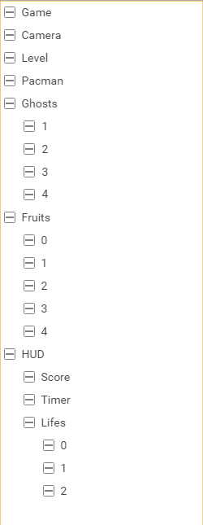
- Menu
- Camera
- Screens
- Start
- Levels
- Level1
- Level2
- Level3
- Level4
- Level5
- Level6
- End
- Score
- Time
- Ghosts
- Coins
- Fruits
- Lifes
- Button
Menu actor
The Menu actor have the behavior component with the class MenuBehavior attached to it.
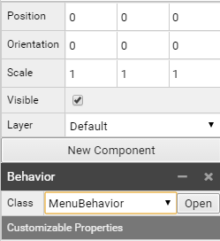
Camera actor
The Camera actor have a camera component attached to it with this parameters.
- Position:(18.75, 25, 50) to have the camera centered on the screens pictures and far enough on Z axis(50).
- Mode:Orthographic (important for our 2d game)
- Orthographic Scale: 50
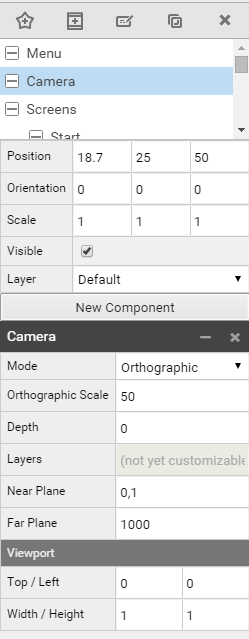
Screens actor
We set the different screens with their parameters and positions (Z axis positions only) :
- Start in position (0, 0, 40), a Sprite Renderer component with Menu/Screens/Start and animation unhover
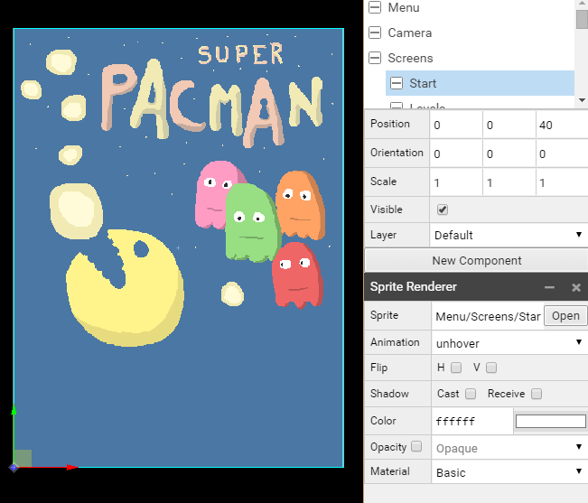
- Levels in position (0, 0, 20), a Sprite Renderer component with Menu/Screens/Levels
- Level1 in position (6.5, 32, 5), a Sprite Renderer component with Menu/Buttons/Levels with Animation level1
- Level2 in position (18.8, 32, 5), a Sprite Renderer component with Menu/Buttons/Levels with Animation level2
- Level3 in position (31, 32, 5), a Sprite Renderer component with Menu/Buttons/Levels with Animation level3
- Level4 in position (6.5, 19, 5), a Sprite Renderer component with Menu/Buttons/Levels with Animation level4
- Level5 in position (18.8, 19, 5), a Sprite Renderer component with Menu/Buttons/Levels with Animation level5
- Level6 in position (31, 19, 5), a Sprite Renderer component with Menu/Buttons/Levels with Animation level6
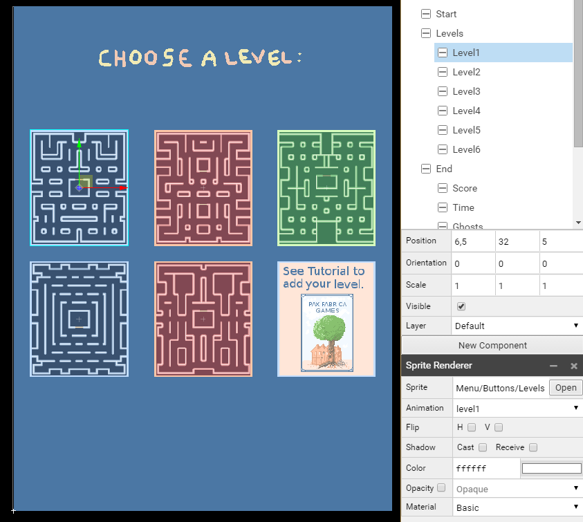
- End in position (0, 0, 0), a Sprite Renderer component with Menu/Screens/End
- Score in position (19, 36, 5), a Text Renderer component with the font Font and the text SCORE : 0000
- Time in position (19, 32, 5), a Text Renderer component with the font Font and the text TIME : 00:00
- Ghosts in position (19, 28, 5), a Text Renderer component with the font Font and the text Ghosts eaten : 0
- Coins in position (19, 24, 5), a Text Renderer component with the font Font and the text Coins eaten : 0
- Fruits in position (19, 20, 5), a Text Renderer component with the font Font and the text Fruits eaten : 0
- Lifes in position (19, 16, 5), a Text Renderer component with the font Font and the text Lifes : 0
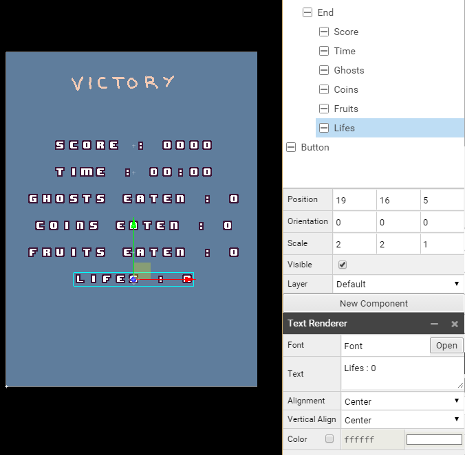
Note: You can navigate with the camera in 3D mode or in 2D and changing the Z axis to focus on the screen you are interested to check.
Button actor
The Button actor in position (19, 6, 45) has a Sprite Render Component with the sprite Menu/Buttons/Buttons and the animation unhoverPlay
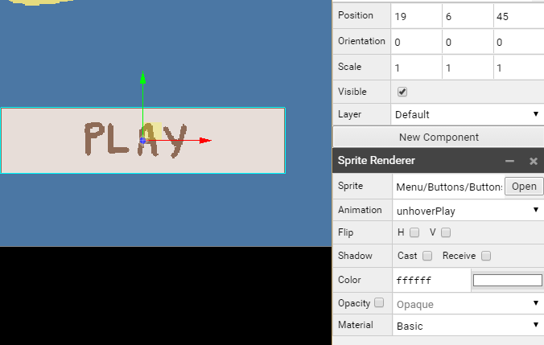
The menu scene is now complete :

Game scene
Here the structure of the game scene actors :
- Game
- Camera
- Level
- Pacman
- Ghosts
- 1
- 2
- 3
- 4
- Fruits
- 0
- 1
- 2
- 3
- 4
- HUD
- Score
- Timer
- Lifes
- 0
- 1
- 2
Game actor
The Game actor have the behavior component with the class GameBehavior attached to it.
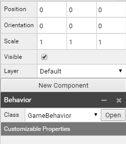
Camera actor
The Camera actor have a camera component attached to it with this parameters.
- Position:(13, 16, 50) to have the camera centered in the center of our maze and far enough on Z axis(50).
- Mode:Orthographic (important for our 2d game)
- Orthographic Scale: 32
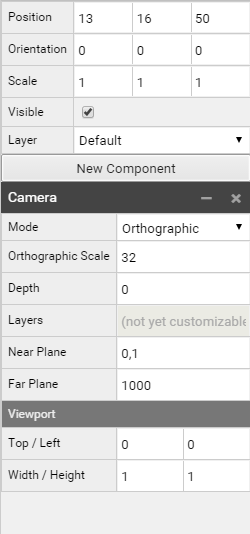
Level actor
The Level actor in position (0, 0, 0) have a Tile Map Renderer component with the Levels/Template/Tile Map attached to it.
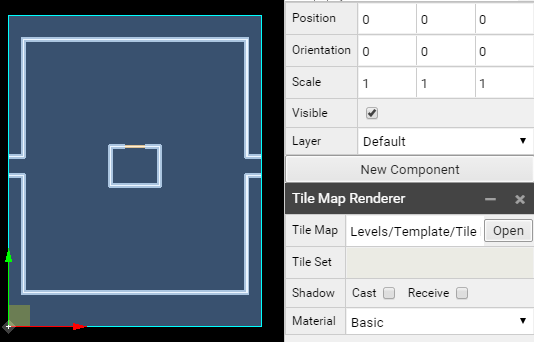
Note : It is normal the camera hide two margins of 1 unit (16px large) from the level.
Pacman actor
The Pacman actor in position (0, 0, 30) have two components :
- Behavior with the class PacmanBehavior
- Sprite Renderer with the sprite Pacman/Move
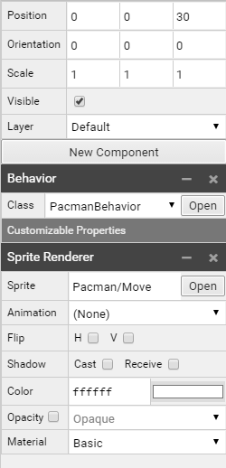
Ghosts actor
The ghosts actor is in position (0, 0, 20), each ghost (1, 2, 3, 4) got two components :
- Behavior with the class GhostBehavior
- Sprite Renderer with the sprite Ghosts/Ghost1 for 1 actor, Ghosts/Ghost2 for 2 actor, Ghosts/Ghost3 for 3 actor, Ghosts/Ghost4 for 4 actor
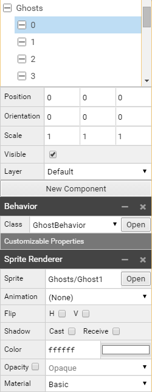
Fruits actor
The Fruits actor in position (0, 0, 10), each fruit (0, 1, 2, 3, 4) got two components and this parameters:
- 0 in position (16, 1, 0), a Behavior component with FruitBehavior class, a Sprite Renderer with Items/Fruits/Sprite and banana Animation
- 1 in position (17.5, 1, 0), a Behavior component with FruitBehavior class, a Sprite Renderer with Items/Fruits/Sprite and orange Animation
- 2 in position (19, 1, 0), a Behavior component with FruitBehavior class, a Sprite Renderer with Items/Fruits/Sprite and apple Animation
- 3 in position (20.5, 1, 0), a Behavior component with FruitBehavior class, a Sprite Renderer with Items/Fruits/Sprite and cherry Animation
- 4 in position (22, 1, 0), a Behavior component with FruitBehavior class, a Sprite Renderer with Items/Fruits/Sprite and stawberry Animation
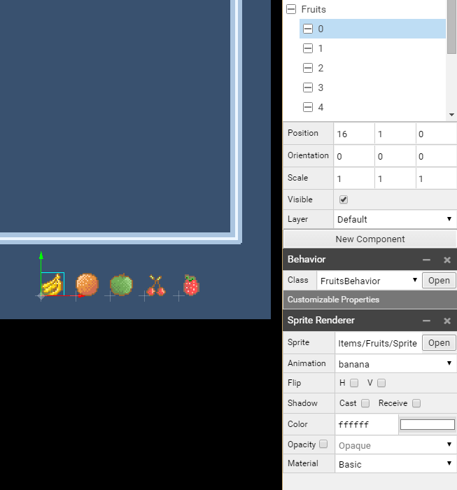
HUD actor
The HUD actor in position (0, 0, 40), the score, timer and lifes got this components and parameters :
- Score in position (7, 31, 0), a Text Renderer component with the font Font, the text Score:0000 and a color fcfee2
- Timer in position (19, 31, 0), a Text Renderer component with the font Font, the text Time:00:00 and a color fcfee2
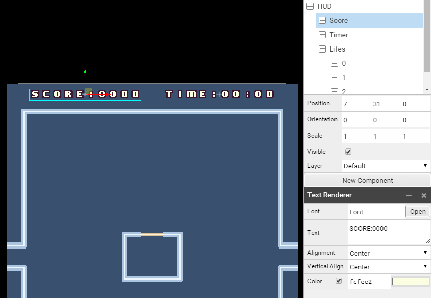
- Lifes
- 0 in position (3, 1, 0), a Sprite Renderer with Pacman/Life and animation full
- 1 in position (5, 1, 0), a Sprite Renderer with Pacman/Life and animation full
- 2 in position (7, 1, 0), a Sprite Renderer with Pacman/Life and animation full
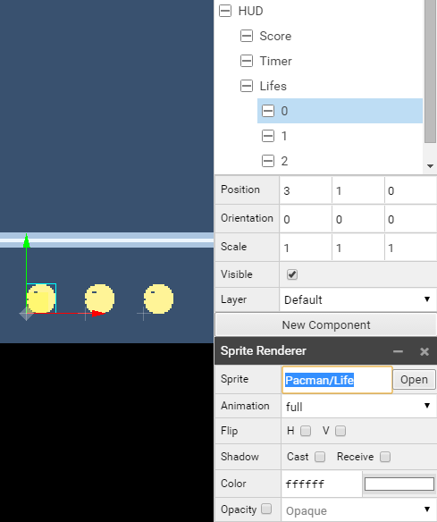
Our game scene is now complete

We can download the superpowers project v5 from this chapter here.